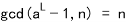

Pollard’s p-1分解法
假设你有一个正整数n并且你知道它有两个不同的素因子p&q，但是我们并不知道这两个素因子是谁。本文分解法的目标就是找出来p和q究竟是「注意到我们只需找到p和q当中的一个即可，另外一个可以很迅速的计算出来」。
Getting Started
让我们从随机地选一个正整数a「1<a<n」开始，我们可以很迅速的计算出gcd(n,a).这个gcd要不然是1（很大概率），要不然就是n的某个素因子的。所以，如果计算出来发现gcd(a,n)不等于1，那么这个gcd就是n的素因子，done.
但是这个概率太小了。很大概率上计算出来的gcd=1的，那么我们就要专注于解决gcd(a,n)=1的情况吧（也就是多了a,n互素的条件）。
假设现在有一个wizard出现，这个幽灵手里拿着一个L，并且保证了L是p-1的倍数，但是这个幽灵在告诉你p是多少之前消失了。你可以使用以下的方式使用这个wizard的信息。计算a的L次方减一。因为p-1整除L，我们知道一定存在一個i，s.t.L=i(p-1),所以使用費馬小定理的話我們可以預見：
a的L次方與1同餘（mod p）。
換句話說，p能整除a的L次方減一。這意味著 or p.如果他不是n，那麼我見就找到了p，done。
但是他很有可能等於n，我們可以回去選擇一個不同的a或者結束算法吧，本身這個就是不一定出結果的算法。